<?xml version="1.0" encoding="UTF-8"?><rss version="2.0"
	xmlns:content="http://purl.org/rss/1.0/modules/content/"
	xmlns:wfw="http://wellformedweb.org/CommentAPI/"
	xmlns:dc="http://purl.org/dc/elements/1.1/"
	xmlns:atom="http://www.w3.org/2005/Atom"
	xmlns:sy="http://purl.org/rss/1.0/modules/syndication/"
	xmlns:slash="http://purl.org/rss/1.0/modules/slash/"
	>

<channel>
	<title>Prensa | Rita Valero</title>
	<atom:link href="./index.html" rel="self" type="application/rss+xml" />
	<link>../../../index.html</link>
	<description>Voz y palabras</description>
	<lastBuildDate>Wed, 24 Aug 2022 11:07:02 +0000</lastBuildDate>
	<language>ca</language>
	<sy:updatePeriod>
	hourly	</sy:updatePeriod>
	<sy:updateFrequency>
	1	</sy:updateFrequency>
	<generator>https://wordpress.org/?v=7.1.3</generator>

<image>
	<url>../../../wp-content/uploads/2021/08/cropped-favicon-rita-valero-32x32.jpg</url>
	<title>Prensa | Rita Valero</title>
	<link>../../../index.html</link>
	<width>32</width>
	<height>32</height>
</image> 
	<item>
		<title>Prensa «Contigo»</title>
		<link>../../../project/prensa-contigo/index.html</link>
					<comments>../../../project/prensa-contigo/index.html#respond</comments>
		
		<dc:creator><![CDATA[graficart]]></dc:creator>
		<pubDate>Thu, 27 Jan 2022 08:00:24 +0000</pubDate>
				<guid isPermaLink="false">http://novaweb.ritavalero.com/?post_type=project&#038;p=279</guid>

					<description><![CDATA[Radio Internacional con Xira Valdés (Madrid) LH Magazin Radio. Ritmo y Compás (Madrid) Miami Televisión con María José Magallanes Rtve. RNE. Radio 1 (Madrid). Madrugadas de Verano con Nacho Álvaro Cadena Cope. La Noche con Bárbara Archilla (Madrid) (minuto 27) + Que Música TV con Víctor Collado 7 Televisión con Marc Gadea 10 Radio. Una Mañana [&#8230;]]]></description>
										<content:encoded><![CDATA[<p><a href="http://www.radiointernacional.es/" target="_blank" rel="noopener"><strong>Radio Internacional con Xira Valdés (Madrid)</strong></a></p>
<p><a href="https://www.lhmagazin.com/radio/" target="_blank" rel="noopener"><strong>LH Magazin Radio. Ritmo y Compás (Madrid)</strong></a></p>
<p>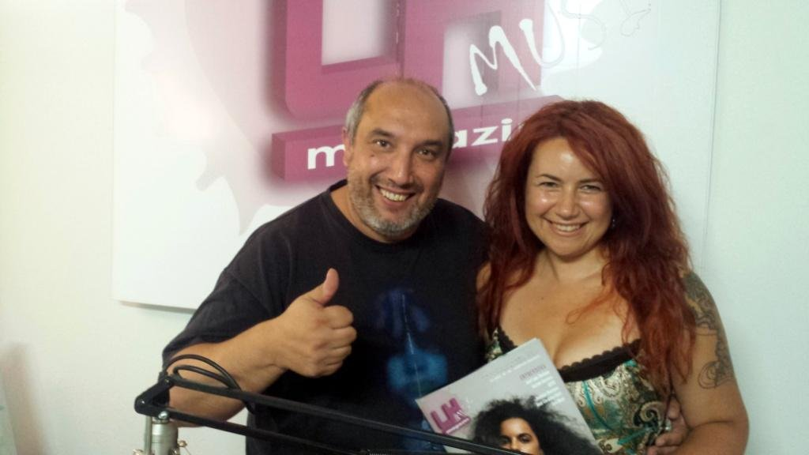</p>
<p><a href="https://youtu.be/rMOE4Wv-Iio?t=42m24s" target="_blank" rel="noopener"><strong>Miami Televisión con María José Magallanes</strong></a></p>
<p>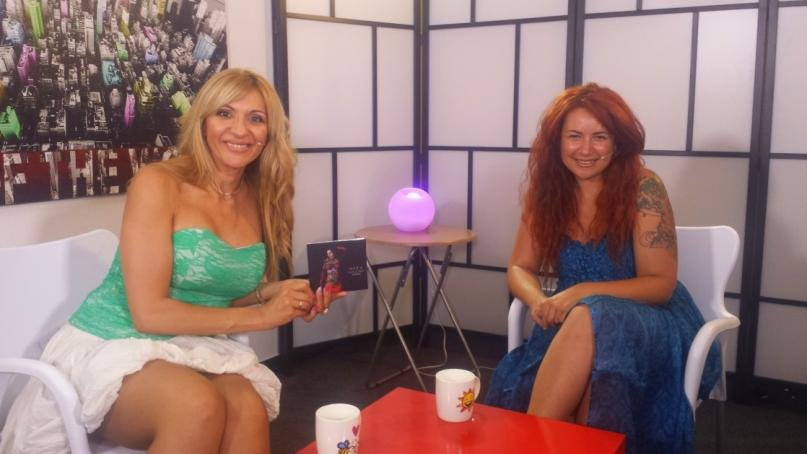</p>
<p><a href="http://www.rtve.es/alacarta/audios/madrugadas-de-verano/madrugadas-verano-rita-valero-contigo-se-iba-titular-lado-oscuro/4168063/" target="_blank" rel="noopener"><strong>Rtve. RNE. Radio 1 (Madrid). </strong><strong>Madrugadas de Verano con Nacho Álvaro</strong></a></p>
<p>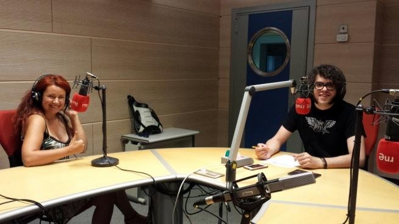 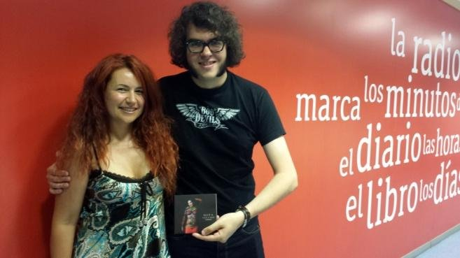</p>
<p><a href="http://www.cope.es/audios/noche/hora-noche-cope-lanocheveranea_409878" target="_blank" rel="noopener"><strong>Cadena Cope. La Noche con Bárbara Archilla (Madrid)</strong></a> (minuto 27)</p>
<p>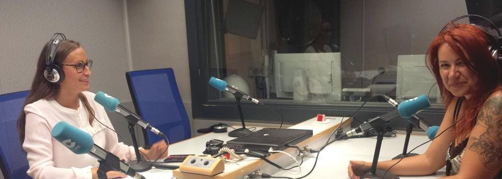 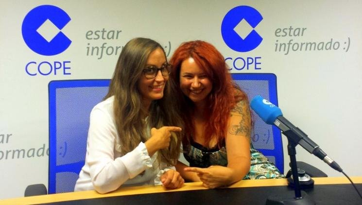 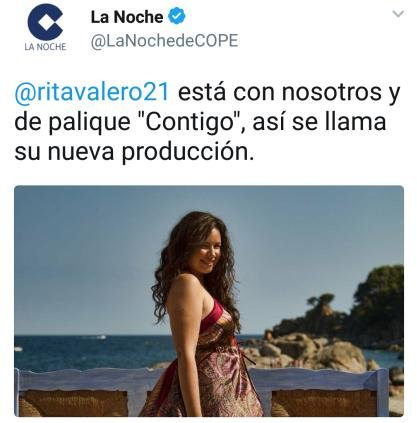</p>
<p><a href="https://www.youtube.com/watch?v=g5JejKEWVrQ" target="_blank" rel="noopener"><strong>+ Que Música TV con Víctor Collado</strong></a></p>
<p>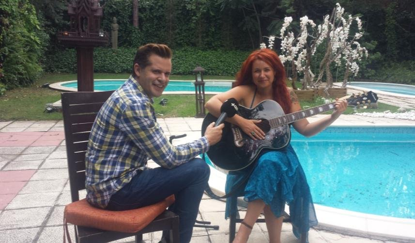</p>
<p><a href="http://7tvregiondemurcia.es/" target="_blank" rel="noopener"><strong>7 Televisión con Marc Gadea</strong></a></p>
<p></p>
<p><a href="http://www.ivoox.com/27-junio-una-manana-10-10-12h-audios-mp3_rf_19484987_1" target="_blank" rel="noopener"><strong>10 Radio. Una Mañana 10 con Javier Pérez Salas (Madrid)</strong></a></p>
<p> 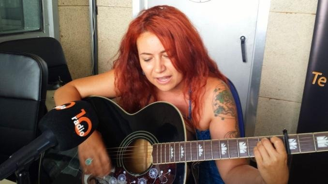</p>
<p><a href="http://www.ivoox.com/conexion-latina-4x49-audios-mp3_rf_20044445_1.html" target="_blank" rel="noopener"><strong>Viva Radio con Fernando Lumbreras (Madrid)</strong></a></p>
<p> 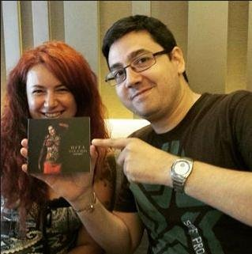</p>
<ul>
<li><a href="http://www.gestionaradio.com/"><strong>Gestiona Radio con Wenceslao Pérez </strong><strong>(Madrid)</strong></a></li>
</ul>
<p></p>
<ul>
<li><a href="http://www.radiotentacion.com/"><strong>Radio Tentación con Andrés Fernández (Madrid)</strong></a></li>
</ul>
<p>&nbsp;</p>
<ul>
<li><a href="http://www.rtve.es/alacarta/rne/radio-5/"><strong>Radio 5 (RNE) con Pilar Socorro</strong></a></li>
</ul>
<p>&nbsp;</p>
<ul>
<li><strong>Rtve. Salimos por el mundo con Mavi Aldana y Pilar Bobadilla (Madrid)</strong></li>
</ul>
<p> 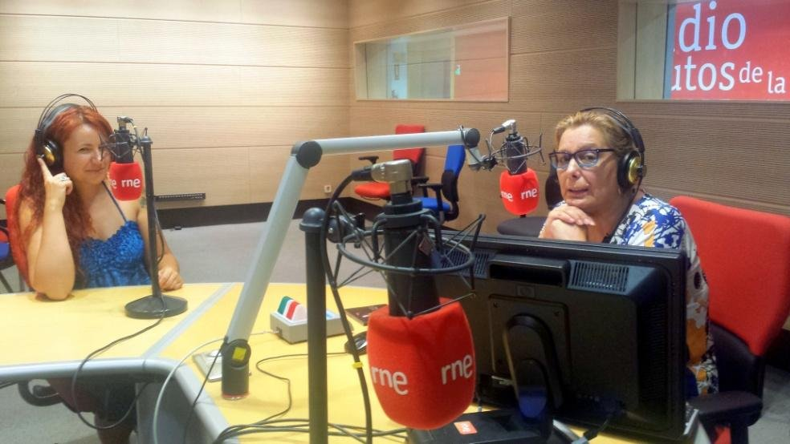</p>
<ul>
<li><a href="http://www.movistarplus.es/canal/non-stop-people?id=NONSTP"><strong>Movistar Plus. Non Stop People Televisión</strong></a></li>
</ul>
<p>&nbsp;</p>
<ul>
<li><strong>Cadena Ser con Pilar García       (Madrid)</strong></li>
</ul>
<p>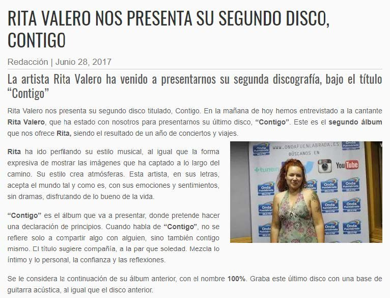</p>
<ul>
<li><a href="http://ondafuenlabrada.es/rita-valero-nos-presenta-segundo-disco-contigo/"><strong>Onda Fuenlabrada          (Madrid)</strong></a></li>
</ul>
<p>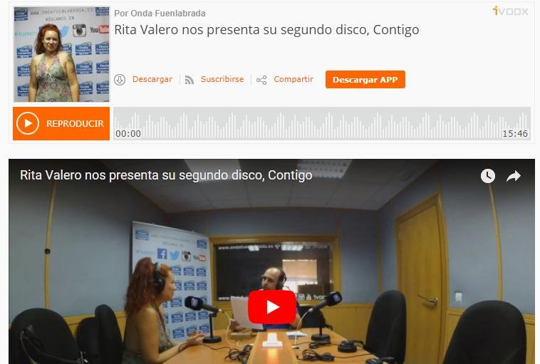</p>
<ul>
<li><a href="http://getafetelevision.com/rita-valero/"><strong>Getafe Televisión</strong></a></li>
</ul>
<p>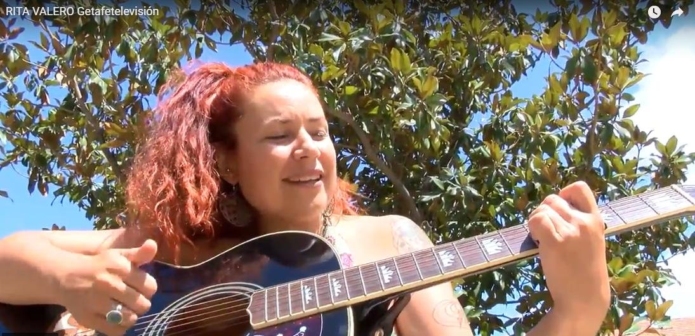</p>
<ul>
<li><a href="http://www.vintechmagazine.com/tag/madrid-tendencias/"><strong>Revista Madrid Tendencias</strong></a></li>
</ul>
<p>&nbsp;</p>
<ul>
<li><a href="https://lunaspasajeras.net/2017/07/11/entrevista-a-rita-valero/"><strong>Revista Lunas Pasajeras con Esther Estéban</strong></a></li>
</ul>
<p>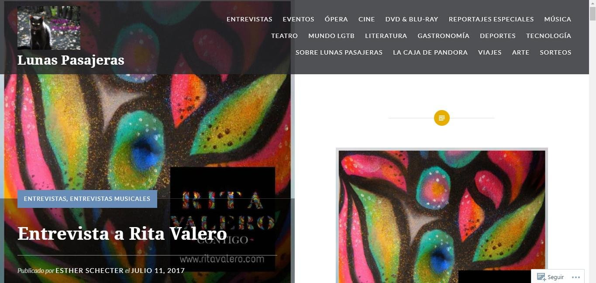</p>
<ul>
<li><a href="http://nacho-valbuena.webnode.es/"><strong>Mito-Manía con Nacho Valbuena</strong></a></li>
</ul>
<p></p>
<ul>
<li><strong>Sala Libertad 8          (Madrid)</strong></li>
</ul>
<p>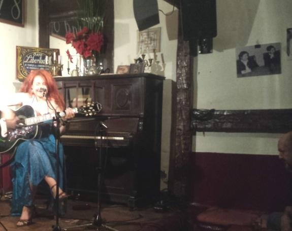</p>
<p> 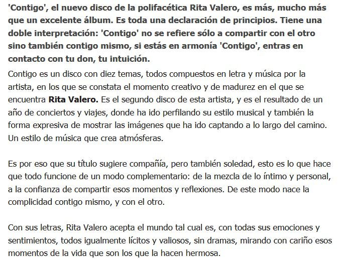</p>
<ul>
<li><a href="https://www.diariocritico.com/criticas-anuncio-mahou-pago-musicos-con-botellines"><strong>Diario Crítico (Madrid)</strong></a></li>
</ul>
<p>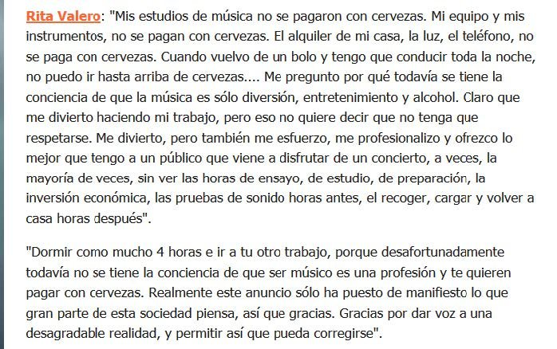 </p>
<ul>
<li><strong>El Punt Diari amb Xavier Castillon  (Girona)</strong></li>
</ul>
<p>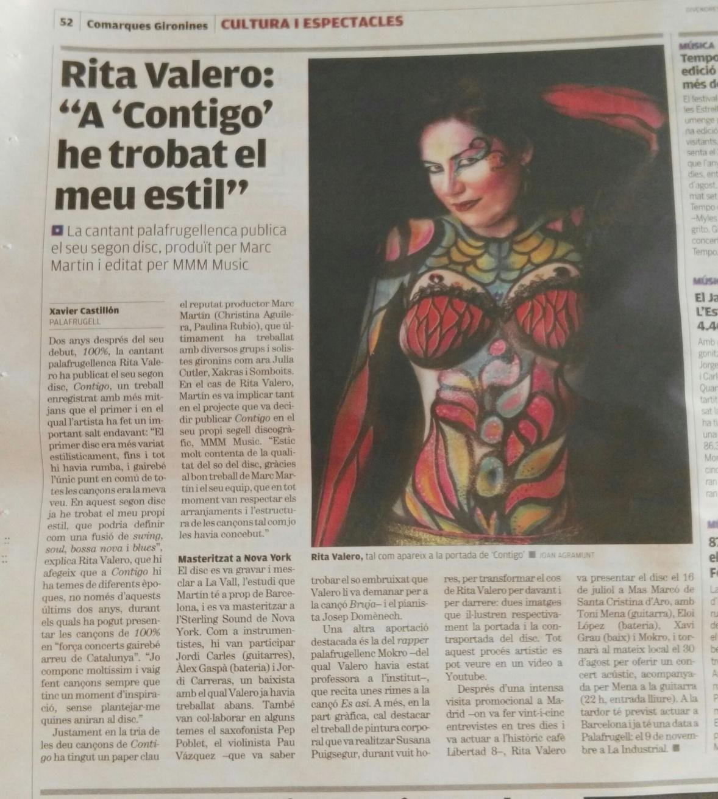</p>
<ul>
<li><strong>Diari de Girona</strong></li>
</ul>
<p>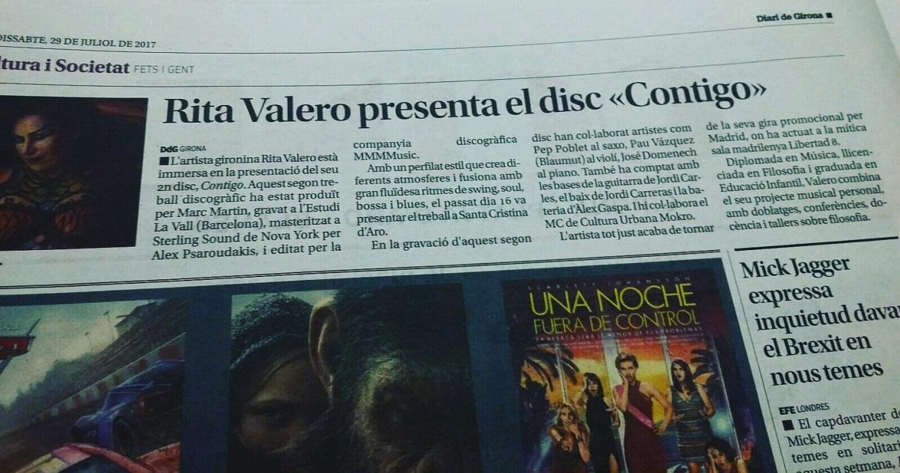</p>
<ul>
<li><strong>Revista GiDona. (Girona)</strong></li>
</ul>
<p>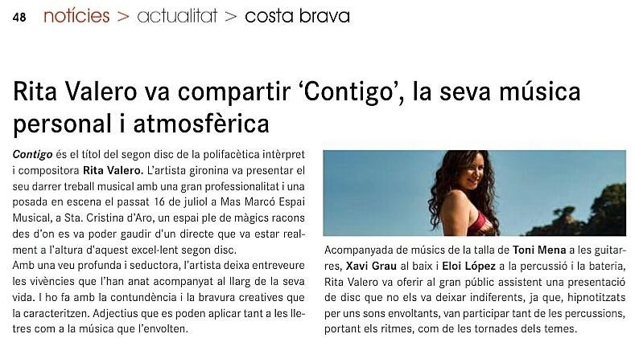</p>
<ul>
<li><strong>Ràdio St. Gregori (Girona)</strong></li>
</ul>
<p>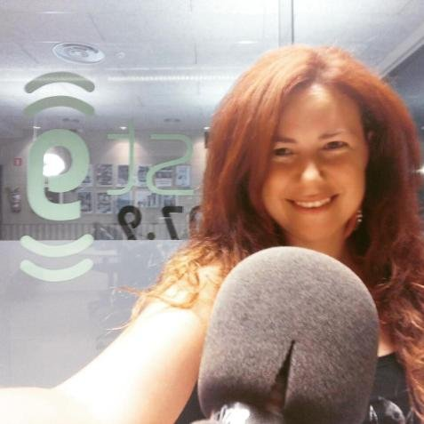 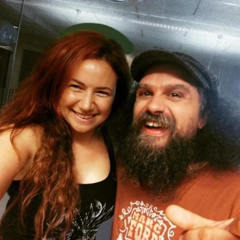</p>
<ul>
<li><strong>Ràdio Begur (Girona)</strong></li>
</ul>
<p>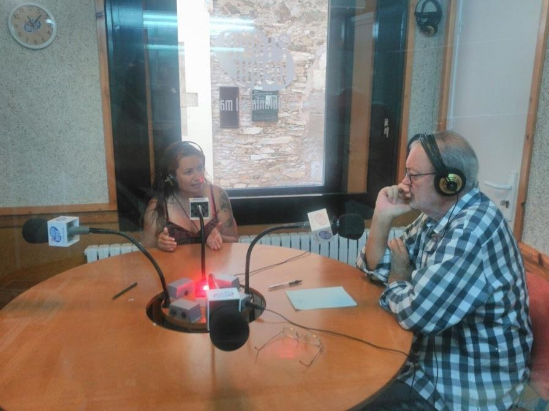 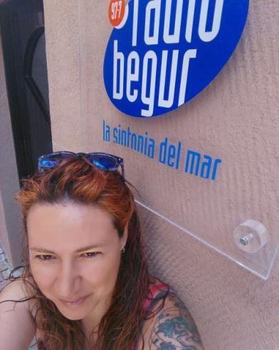</p>
<ul>
<li><strong>Ràdio Capital (Girona)</strong></li>
</ul>
<p>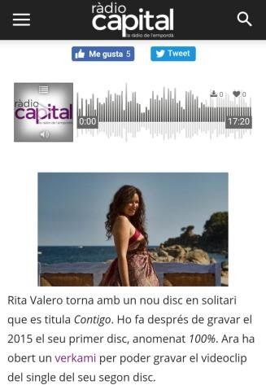 </p>
<ul>
<li><strong>Ràdio Palafrugell (Girona)</strong></li>
</ul>
<p>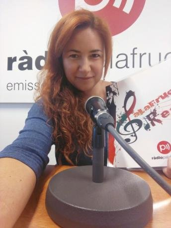</p>
<ul>
<li><a href="https://www.ivoox.com/entrevista-a-rita-valero-audios-mp3_rf_19062623_1.html"><strong>Ràdio Llavaneras. Rompiendo el silencio (Barcelona)</strong></a></li>
</ul>
<p>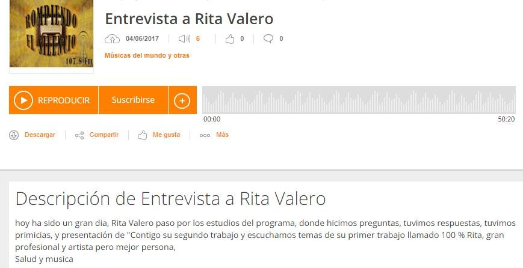</p>
]]></content:encoded>
					
					<wfw:commentRss>../../../project/prensa-contigo/feed/index.html</wfw:commentRss>
			<slash:comments>0</slash:comments>
		
		
			</item>
		<item>
		<title>Prensa «100%»</title>
		<link>../../../project/prensa-100/index.html</link>
					<comments>../../../project/prensa-100/index.html#respond</comments>
		
		<dc:creator><![CDATA[graficart]]></dc:creator>
		<pubDate>Thu, 27 Jan 2022 07:54:15 +0000</pubDate>
				<guid isPermaLink="false">http://novaweb.ritavalero.com/?post_type=project&#038;p=273</guid>

					<description><![CDATA[La Vanguardia 15/11/2015 TV3 30/10/2015 (Minuto 8:26) TV Costa Brava Programa 17200. 21/10/2015 RETALLS DE PREMSA GIDONA Nª91. JUNY 2015 Publish at Calameo   ENDERROCK nº 237 JUNY 2015 El Personatge. Revista del Baix Empordà Juny 2015 La Vanguardia Juny 2015 Fem Girona_La Xarxa Surt de Casa Maig 2015 TV COSTA BRAVA. L’INFORMATIU 17/04/2015 TV GIRONA. Programa TÉ [&#8230;]]]></description>
										<content:encoded><![CDATA[<p><a href="http://www.lavanguardia.com/agenda/actividades/36728_presentacio-videoclip-ausencias-tema-del-disc-100-de-rita-valero.html" target="_blank" rel="noopener">La Vanguardia</a> 15/11/2015</p>
<p><a href="http://www.ccma.cat/tv3/alacarta/noticies-324/telenoticies-comarques-girona-30102015/video/5560879/" target="_blank" rel="noopener">TV3</a> 30/10/2015 (Minuto 8:26)</p>
<p><a href="http://tvcostabrava.xiptv.cat/17200/capitol/17200-presentacio-disc-100-rita-valero#" target="_blank" rel="noopener">TV Costa Brava</a> Programa 17200. 21/10/2015</p>
<p>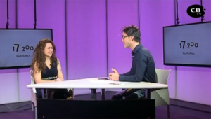</p>
<p><strong>RETALLS DE PREMSA</strong></p>
<p>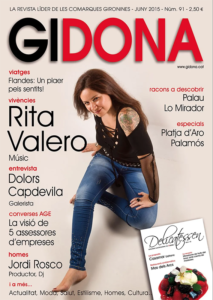<br />
<a href="http://www.calameo.com/books/001199664c44c118cae34" target="_blank" rel="noopener">GIDONA Nª91. JUNY 2015</a></p>
<div>
<div><a href="http://www.calameo.com/" target="_blank" rel="noopener">Publish at Calameo</a></div>
</div>
<div></div>
<div> 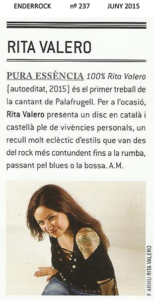</div>
<ul>
<li><a href="../../../wp-content/uploads/2022/01/ENDERROCK-no-237-JUNY-2015.pdf" target="_blank" rel="noopener">ENDERROCK nº 237 JUNY 2015</a></li>
<li><a href="../../../wp-content/uploads/2022/01/El-Personatge.-Revista-del-Baix-Empordà.pdf" target="_blank" rel="noopener">El Personatge. Revista del Baix Empordà Juny 2015</a></li>
<li><a href="../../../wp-content/uploads/2022/01/La-Vanguardia-Juny.pdf" target="_blank" rel="noopener">La Vanguardia Juny 2015</a></li>
<li><a href="../../../wp-content/uploads/2022/01/Fem-Girona_La-Xarxa.pdf" target="_blank" rel="noopener">Fem Girona_La Xarxa</a></li>
</ul>
<p>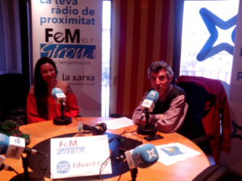</p>
<ul>
<li><a href="../../../wp-content/uploads/2022/01/Surt-de-Casa-Maig-2015.pdf" target="_blank" rel="noopener">Surt de Casa Maig 2015</a></li>
<li>TV COSTA BRAVA. L’INFORMATIU 17/04/2015</li>
<li>TV GIRONA. Programa TÉ DE TOT DEL 24/04/2015 _ PART 1 <strong>Inici 00:42:10</strong></li>
</ul>
<p></p>
<ul>
<li><a href="../../../wp-content/uploads/2022/01/Contra-Diari-de-Girona.pdf" target="_blank" rel="noopener">Diari de Girona. Contra. Abril 2015</a></li>
</ul>
<ul>
<li><a href="http://podcastcdn-12.ivoox.com/audio/7/1/1/7/4387117.m4a?secure=gqgkoSPghKsaIoJNQQooGw==,1429666326" target="_blank" rel="noopener">Entrevista de radio a Somreggeafm Abril 2015</a></li>
<li><a href="../../../wp-content/uploads/2022/01/Revista-del-Baix-Empordà.pdf" target="_blank" rel="noopener">Revista del Baix Empordà Abril 2015</a></li>
<li><a href="../../../wp-content/uploads/2022/01/El-Punt-Avui.pdf" target="_blank" rel="noopener">El Punt Avui Abril 2015</a></li>
</ul>
<p>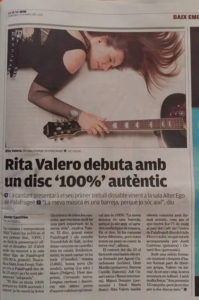</p>
<ul>
<li><a href="../../../wp-content/uploads/2022/01/Diari-Ara.pdf" target="_blank" rel="noopener">Diari Ara Abril 2015</a></li>
<li><a href="../../../wp-content/uploads/2022/01/El-Nou-Enero-2015.pdf" target="_blank" rel="noopener">El Nou Gener 2015</a></li>
<li><a href="../../../wp-content/uploads/2022/01/Spain-Events-Noviembre-2014.pdf" target="_blank" rel="noopener">Spain Events Novembre 2014</a></li>
<li><a href="../../../wp-content/uploads/2022/01/Programación-13-Progés-Can-Genís-Noviembre-2014.pdf" target="_blank" rel="noopener">Programación 13 Progés Can Genís Novembre 2014</a></li>
<li><a href="../../../wp-content/uploads/2022/01/Revista-Can-Bech-no-40-Octubre-Noviembre-2014.pdf" target="_blank" rel="noopener">Revista Can Bech nº 40 Octubre Novembre 2014</a></li>
<li><a href="../../../wp-content/uploads/2022/01/La-Vanguardia-Octubre-2014.pdf" target="_blank" rel="noopener">La Vanguardia Octubre 2014</a></li>
<li><a href="../../../wp-content/uploads/2022/01/Revista-digital-El-Musicógrafo-Enero-2014.pdf" target="_blank" rel="noopener">Revista digital El Musicógrafo Gener 2014</a></li>
<li><a href="../../../wp-content/uploads/2022/01/Programa-On-line-El-Musicógrafo-I-Festival-Enero-2014.pdf" target="_blank" rel="noopener">Programa On line El Musicógrafo I Festival Gener 2014</a></li>
</ul>
<p><iframe loading="lazy" src="https://www.youtube.com/embed/H8AyfZWVnDk?t=4m5s" width="500" height="281" frameborder="0" allowfullscreen="allowfullscreen" data-mce-fragment="1"></iframe></p>
]]></content:encoded>
					
					<wfw:commentRss>../../../project/prensa-100/feed/index.html</wfw:commentRss>
			<slash:comments>0</slash:comments>
		
		
			</item>
	</channel>
</rss>
